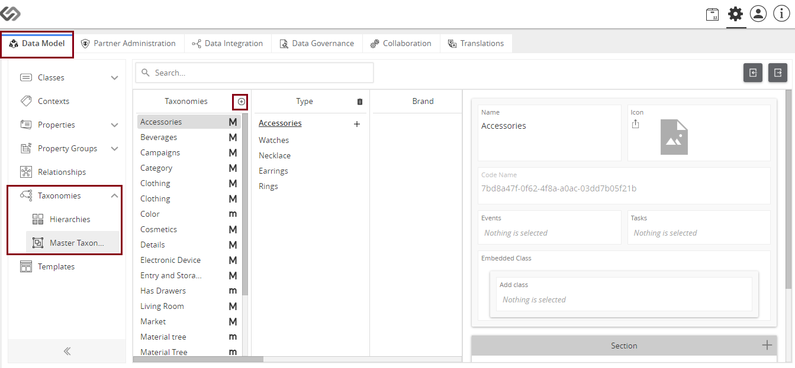

Taxonomy¶
Definition and Use¶
Taxonomy is the classification of data. It is about “semantic architecture”, which includes naming items, making decisions for different concept, and term mapping. it can also be used in creating consistent structure. It can be used to deal with large volume of data to categorize it in readable and identifiable form. In the CS Global system, Taxonomy is also used to link two objects and drive inheritance. A child (or last node of a taxonomy branch) will have most attributes (not all) of the parent node.
- Example:
Taxonomy determines the type of product (Chair), its category (Furniture), its attributes (Teakwood, Mahogany, etc.) and the attribute’s type (Wood type, wood finish).

In CS Global system, Taxonomy has two types:
- Hierarchies
- Major Taxonomy
Hierarchies¶
Definition and Use¶
A hierarchy refers to the way products are organized and displayed in the system. Each hierarchy level divides similar types of products into progressively smaller categories. The main objectives of hierarchy are to structure, set up and maintain product attributes and properties at the category level. Example:
If we create a hierarchy of Master ‘Fashion’ Taxonomy, it can be further classified to level 2 (‘Shirts’, ‘Trousers’, etc). A Shirt can be further, be classified to Formal or casual wear.
Major Taxonomy¶
Definition and Use¶
Major Taxonomy determines the category of the products. It is, generally, the highest node of the hierarchy that drives the inheritance. Major Taxonomy may have several levels (Level -2, Level -3, etc.). Major taxonomy has category specific attributes mapped to relevant category levels. Master taxonomy is generally static, as any changes there would impact the overall data quality. A major difference between Hierarchy and Taxonomy in this system is that you can’t add ‘property collection’ to hierarchies.
Example:
A Retailer selling furniture and home appliances may categorize products into Kitchen & Bathroom, Living Room, and Bed Room and so on. The category Kitchen & Bathroom can further have categories like Kitchen Furniture, Bathroom Furniture, and Appliances and so on.